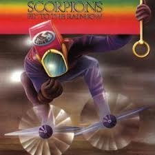

Rise to fame (1974-1978)

In 1974 the new line-up of Scorpions released Fly to the Rainbow. The album proved to be more successful than Lonesome Crow and songs such as "Speedy's Coming" and the title track established the band's sound. Achim Kirschning decided to leave after the recordings. Soon after, Jurgen Rosenthal had to leave as he was being drafted into the army. In 1976, he would join a German progressive rock band called Eloy recording three albums. He was replaced by a Belgian drummer Rudy Lenners.
In 1975 the band released In Trance, which marked the beginning of Scorpions' long collaboration with German producer Dieter Dierks. The album was a huge step forward for Scorpions and established their heavy metal formula. It garnered a fan base at home and abroad with cuts such as "In Trance", "Dark Lady" and "Robot Man".
In 1976, Scorpions released Virgin Killer. The album's cover featured a nude prepubescent girl behind a broken pane of glass. The cover art was designed by Stefan Bohle who was the product manager for RCA Records, their label at the time. The cover brought the band considerable market exposure but was subsequently pulled or replaced in other countries. The album itself garnered demographic praise for its music from select critics and fan base.
The following year, Rudy Lenners resigned for personal reasons and was replaced by Herman Rarebell.
For the follow-up Taken by Force, RCA Records made a determined effort to promote the album in stores and on the radio. The album's single, "Steamrock Fever", was added to some of RCA's radio promotional records. Roth was not happy with the commercial direction the band was taking. Although he performed on the band's Japan tour, he departed to form his own band, Electric Sun prior to the release of the resultant double live album Tokyo Tapes. Tokyo Tapes was released in the US and Europe six months after its Japanese release. By that time in mid 1978, after auditioning around 140 guitarists, Scorpions recruited guitarist Matthias Jabs.